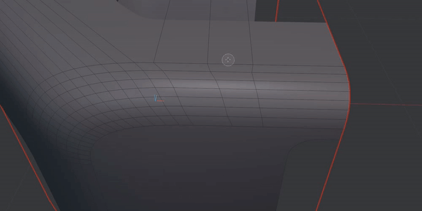

0.18
2025-05-12
Like for DECALmachine the other day, this is mostly a bugfix release, but it finally gets my official 4.4 approval stamp now.
Again, sorry it took me so long, but I've spent the past 3 months on MACHIN3tools 1.12release is imminent and some bigger behind-the-scene changes, hence the delay.
Something that has been long requested, but since I had no way to test and since Blender itself does treat it differently internally, all tools should now support Apple magic mouse "scrolling".
Other then that and beyond fixing a few issues, this release updates and generalizes various internals - trickle down lessons from HyperCursor - and also updates and modernizes some of the UI, in particular the sidebar panel and addon prefs.
See changelog for details and enjoy.
0.17
2024-11-22
Small update. Blender 4.3 does not seem to require any changes, but I've ticked a few things of my todo list and fixed two small issues with this release.
This means Blender all the way back to 3.6 is still supported.
LSelect (and the Select wrapper) now allow you to limit the loop selection via a step count. limit loop selections using a step count
{kind=link}
Unf*ck now supports multiple separate selections at once. multiple indepented edge loop selections adjusted in one go
{kind=link}
Fuse, Refuse and QuadCorner will now maintain the material index of the selection. material indices are now maintained for meshes with multiple materials
{kind=link}
Finally, I've added a modal wrapper for LoopTool's Space tool.  LoopTools' Space now has a modal wrapper
{kind=link}
As always, check out the changelog for a list of all changes.
0.16
2024-07-10
This release bring some minor tweaks to stashing behavior. Previously modifiers on stash objects were only applied when invoking the tool with with ALT mod key being held.
Now, it's mode dependent. In Object mode modifiers will be applied, unless ALT is being held. In Edit Mesh mode modifiers are not applied, unless ALT is being held.
The tooltip will reflect that accordingly, if you ever are in doubt, and the fading wire will give you a clue as well of course.
The BooleanApply tool now properly supports redoing, and again you now have have control over how modifiers should be treated on the stash objects, this time from the redo panel.
By default they will be applied for the stashes created from the boolean operand objects, whereas the boolean host object's stash will not have the mods applied.
I think these are more sensible defaults, when working with objects that have modifiers - which was never really a focus for me when developing MESHmachine and the workflows around it.
There are also a few fixes and you can see them all in the changelog.
Blender 4.2 seems to work without issues, and so now everything from Blender 3.6-4.2 is supported.
If you find anything causing problems, please let me know.
0.15.4
2024-05-16
Bad day.
0.15.3
2024-05-16
This is yet another mostly bugfix release.
In the previous build I accidentallly introduced an exception when switching the Fuse tool to BRIDGE mode.
The Symmetrize tool gets the option to not mirror vertex groups now, which is the new default behavior.
If you dislike this, please let me know, and I can find a better solution. I chose to do this primarily due to vertex group based Bevels I use in HyperCursor.
There are further improvments to the AutoSmooth mod setup in Blender 4.1, by the Boolean tool, when using the S smooth shade toggle.
Also, creating stashes is now prevented for non-mesh objects, which always should have been like this.
See the changelog for a list of all changes.
0.15.2
2024-04-10
This is a bugfix release for the most part, fixing a few issues that have come up.
The newly introduced always_loop_select ability of the Select tool/wrapper, unintentionally prevented doing additional edge selections, after it had made one multi-edge selection already.
The Boolean tool - when adding an Auto Smooth mod - now does it using a faster more direct method.
NormalTransfer and Offset Cut, both fix rare exceptions, and when bringing a Plug into the scene, MESHmachine will now automatically remove any Auto Smooth mod, that may be present on it.
Blender adds these mods automatically on all mesh objects, that were created in Blender 4 or earlier, if they had the auto smooth prop enabled.
Finally, there has been some HyperCursorunreleased integration work, that ensures Geometry Gizmos are maintained when using MESHmachine's fillet tool set - so Fuse, Refuse, Unfuse, Unchamfer and Unbevel.
For Fuse and Refuse, even vertex groups are maintained across each sweep's verts.
Finally, the integrated updated has been updated to always expose the Re-Scan button.
0.15.1
2024-03-19
This was a tiny silent release, fixing a small oversight.
0.15
2024-03-18
This release brings Blender 4.1 support, which introduced changes to (Auto)Smooth behavior.
Beyond that, there are a couple of improvements on the Boolean, Symmetrize and Select tools.
With the Boolean tool in Blender 4.1, when Auto Smooth is enabled through the modifier, either on the operand object(s), or on the active object itself, because you are toggling it in the modal using the S key, the mod will be added towards the end of the stack, but always before Mirror or Array mods, they any of these be at the end of the stack.
Also operand objects are now also hidden using cycles visibility settings, not only using the hide_render prop.
Symmetrize now exposes the angle threshold used for redundant center edge removal
The Select wrapper has received an Always Loop Select toggle
The Stashes HUD has been improved as well, and will no longer collide with MACHIN3tool's Focus HUD.
Get Support
The GetSupport tool has been made more accessible and is placed at the top of the addon preferences
It will now - in Blender 4.1 - automatically open the readme.html with instructions in your web browser. Those same instructions can be found here in the docs of course.
Integrated Updater
Finally, there is now an integrated way to do an update installationstill from a .zip file! from inside of Blender.
So no longer, will you have to do it from the file browser, to maintain your previous settings.
It also - by default - ensures your plug assets are not lost, should you have kept them in the addon location still.
Also placed at the top of the addon preferences: the new integrated updater
If you have just downloaded your future MESHmachine update, the updater will find it for you!
Keep in mind
Since this feature is only introduced now in 0.15, it will only be of use for upcoming releases, so can't be used to install this very 0.15 update yet.
In the screenshot above, old versions are used for demonstration. But of course you could downgrade with this tool as well.
more
As always, check the changelog for a list of all changes.
Pricing
I've decided to bump the price a little, to counter a general downtrend in revenue, in face of rising living and so development costs, that I have observed for over a year now.
The reasons for this are not clear, but it's likely a mix of multiple: post-COVID era, reaching market saturation (?), increased competition, lack of new products and social media activity, while my main focus remains on getting HyperCursor out, gen AI, inflation, layoffs, etc.
For now, I still want to avoid charging for updates, but it may be inevitable. I'll see how it goes.
If you are still reading, note that I have a Patreon account, and HyperCursor is in pre-release.
Thanks for your support!
0.14
2023-11-14
This is the Blender 4.0 compatibility release.
Check out the changelog for a list of all changes.
0.13
2023-06-28
Blender 3.6 - a new LTS release is out, and it finally allows for the complete removal of the legacy bgl module.
Beyond the bgl removal, there are a few smaller tweaks and improvements, such as new mapping methods for Normal Transfers, improved Symmetrize redundant center edge removal, and finally extremly reliable timer modals, which no longer suffer from occasional, unintended speed ups, which could be quite annoying for the Add Boolean tool for instance.
Upon popular request, I've also added the Tutorial.blend file again, which was originally supplied with the pre-0.6 releases.
You can load it from the MESHmachine help panel in the 3D view.
Furthermore, the MESHmachine sidebar panel can now be completely disabled in the addon prefs.
See the changelog for a list of all changes
0.12
2022-12-30
A small feature release, it focuses mostly on playing nice alongside HyperCursor, which is in pre-release on Patreon since Christmas Eve.
Consequentially the boolean tools have been updated. BooleanDuplicate has been rewritten completely and will now duplicate the entire object tree, which includes modifier objects, even those that aren't parented.
It will now also no longer initiate the Translate tool at the end, which allows for the operator props to remain accessible from the redo panel.
Split Booleans from the AddBoolean tool have been made more robust.
The Symmetrize tool will now by default remove the center edge loop, it it's redundant, based on the edges' angles.
Fuse, Change Width, etc have been fine-tuned to better work at varying object scales.
See the changelog for a complete list of changes.
Happy New Year!
0.11.2
2022-04-30
This release hopefully resolves some odd 3.1 related crashes.
I've also added small, one-time thank you message, when opening the addon preferences forfthe first time.
0.11.1
2022-04-24
The previous release has been very solid. So besides a few minor tweaks and adjusments 0.11.1 only really prevents cutters created by the Boolean tool from being rendered.
0.11
2022-03-09
This is the Blender 3.1 release.
In addition to 3.1 support, 0.11 also provides a permanent solution to the vertex group memory issue affecting NormalTransefr, Conform and Plug, that was introduced in Blender 3.0, and for which 0.10 only provided a workaround, and one that didn't include Plug.
And that's about it. Lately, I was rather occupied with PUNCHit and MACHIN3tools and even some design work for once.
Oh, I also have a Patreon account now, where I will do pre-releases of upcoming addons, and where I share blend files, if I manage to find time for art. So if you are interested in further supporting my work, that would be a good way to do it. It is very much appreciated! Thank you for considering!
0.10
2021-12-24
This is a small feature update. Both new features are based on user feedback, so thanks to you guys for suggesting these.
Boolean
The Duplicate Boolean tool is now fully recursive, which means, it can duplicate or instance complex boolean setups, where the boolean operands themselves have boolean modifiers. This includes BoxCutter insets.
Note
You still only need to have the main object selected, and all cutters can remain hidden.
Symmetrize
The Symmetrize tool now has a Remove mode, which you can toggle using the X key.
Instead of mirroring the mesh along one axis and in one direction, it will instead remove half the mesh in the chosen direction.
Furthermore, using the S key you can now also choose to affect only the selected parts of a mesh. This works for both - Symmetrize and Remove mode.
More
In addition there are a few fixes in regards to MACHIN3tools' group empties. Check out the changelog for details.
Merry Christmas, enjoy the holidays!
0.9.1
2021-12-18
This mostly a bugfix release, but it also improves Flatten and Unchamfer.
Blender 3.0 unfortunatly broke the NormalTransferand Conform tools, due a bug relating to vertex groups.
Furthermore, due to a change in keymap property representation in Blender 3.0, it was no longer possible to add the Split or Delete tools (depending on your keymap choice of Y or X) to the MESHmachine menu. This has been fixed now.
Check out the changelog for details.
0.9
2021-11-25
This is the Blender 3.0 release. Note, that at the time of this release, Blender 3.0 is still in beta. Alongside 3.0, Blender 2.93 LTS is still being supported, but support for any earlier versions is dropped now.
This release also no longer relies on Blender's bgl module for VIEW3D drawing.
However, if you want MESHmachine to draw smooth, anti-aliased lines, you need to enable Use Legacy Line Smoothing in the addon preferences, which still uses bgl.
Boolean
This release adds the Duplicate Boolean tool, which is used to easily duplicate or instance objects with one or multiple boolean modifiers, including all the boolean objects - aka "cutters" - even if they are hidden.
The Apply Boolean tool has been updated to support applying boolean mods on multi-object selections.
Unfuse and Unbevel
Both tools will no longer set sharp edges by default, unless the face selection actually consists of smooth faces.
More
There are various smaller tweaks and adjustments, such as improvements to the GetSupport tool and the removal of legacy code for pre-2.93 case handling.
Finally note that, due to the number of tools in the addon, not everything could be fully tested in 3.0, so some issues may still arise and should be reported.
Plugs
To conclude, here is a very interesting, topology-focused use case for Plugs, which you may want to check out, by Unis on gumroad.
0.8.2
A tiny bugfix release addressing an issue on some linux systems.
Also, disable Wedge debug output, which was accidentally left enabled in 0.8.1.
0.8.1
This is a hotfix release for the Wedge tool. No other changes.
0.8
MESHmachine 0.8 is the official 2.93 release, and I'd ask you to update to 2.93, if you haven't already.
2.93 is the latest stable release, and the latest LTS release at the same time. Any issues occurring only in earlier versions will not be addressed going forward.
This is a feature release adding the Wedge tool, Split Booleans and related tooling, and the ability to set the Cursor to Stashes.
Beyond that there have been some tweaks and a few fixes.
Cursor to Stash
Split Booleans
Wedge
Check out the changelog for the full list of changes.
0.7.2
The second release in the 0.7 cycle resolves an issue with subset plug creation.
It also adds the ability to stash evaluated meshes by holding ALT, and improves dealing with child objects when swapping stashes.
See the changelog for details.
0.7.1
This is a small bugfix release with some UI tweaks.
If you have 0.7 installed already, I'd consider this an optional update, depending on whether you require any of the supplied fixes or tweaks.
The easiest way to install a bugfix release like this one, is to simply overwrite the existing MESHmachine addon folder with the MESHmachine folder in the 0.7.1 zip file. There's no need to delete anything.
0.7
The 0.7 release is the first real feature release since 0.6, which released 2.5 years ago.
While there have been the 2.80 port and a few compatibility releases - some with new features sneaked in - there hasn't been a lot of development happening since 0.6.
This is due to the complete rewrite of DECALmachine for Blender 2.80, as well as the following updates creating a full decal export pipeline, which took 2+ years in total.
MESHmachine 0.7 then is the result of finally spending some new development time on MESHmachine again, and pulling together a few unreleased features I had been sitting on for those past 2+ years. It brings various improvements in regards to existing workflows, some new tools and features, and new documentation.
0.7 is only the start though, I will make MESHmachine a main focus of my development efforts for 2021, and likely 2022 as well.
Installation & Support
Please make sure to check the updated installation instructions, as well as the preferences.
Also see this, if you require product support.
Boolean
MESHmachine 0.7 adds two boolean tools, for adding and applying booleans.
Unique about them - besides the convenience - is the integration with stashes.
Selection
While VSelect was present in 0.6 already, LSelect and SSelect only came with 0.6.10 and remained undocumented - until now.
Still, buried in a sub-menu, all three could be awkard to use, considering how frequent selections are done while modeling.
The new Select tool rectifies this.
Symmetrize
MESHmachine's Symmetrize has been a bit restrictive in the past, as it required 3 separate keymaps to mirror in 3 directions, and at all times an awareness of how your object is aligned. If you wanted to mirror in one of the other 3 directions, you'd have to use the redo panel.
Version 0.7 adds the flick mode, which means you can use a single keymap to mirror in all 6 directions, in a manner very similar to how pie menus work.
Stashes
Stashes, a central feature of MESHmachine, are becomming even better.
You can now conveniently access them from the sidebar, complementing the View Stashes tool.
From here you can now even define custom names.
In addition to editing and retrieving stashes, you can now also swap them with the active object.
Furthermore, removing object stashes, and dealing with orphan stashes has been simplified.
You can now create stashes from face selections, and you can sweep stashes if they end up cluttering your scene after appending objects.
More
If you ever needed to delete a plug, know that you can do that easily now.
And if you ever forgot to create a stash and needed a normal source to flx a shading issue, perhaps after plugging, you can try creating a Quick Patch with MESHmachine 0.7.
Experimental Features
I have decided to release a few experimental features with this release, the most exciting being the OffsetCut tool.
Please understand, that experimental features are undocumented, untested and not covered by product support.
I consider them unfinished, see this for details.
In conclusion, I want to thank you for your patience and for your support.
You can check out the changelog for details on this release, as well as view all new videos in this playlist.
0.6.13
This is a tiny bugfix release for users of 2.90, that fixes an exception when adding a plug to a library.
0.6.12
This release ensures compatibility with Blender 2.90 and adds ALT navigation support for users of the Industry Compatibly keymap. It also changes how panels are registered to support proper workspace filtering.
0.6.11
This release ensures compatibility with Blender 2.83 and fixes a few minor issues.
See the changelog for details.
0.6.10
This releases adds new Selection tools like LSelect and SSelect.
Lselect can select edge loops based on an angle threshold, which allows for loop selection next to ngons. In Face mode, LSelect can select face loops based on an initial 2 face selection. This mode is specifically made to easily select perimeter loops on the outer bounds of plugs.
SSelect can simplify the selection of sharp edges. Based on an initial selection of sharp edges, the tool will select all other sharp edges touching the initial selection. Again, this is helpful in cases where Blender's default loop selection fails due to the presences of ngons.
Both tools can be found the Select sub menu
This version also introduces the ability to edit existing stashes. Just bring up the ViewStashes tool, pick a stash and press the E key.
When you are done, press ALT + ESC to exit edit stash mode.
Finally, the LoopTools Circle Wrapper now has the ability to fix the midpoint, which can be way off, if the circle has an irregular vert distribution.
Use the X key once the tools is running.
0.6.9
This release updates MESHmachine to properly work with recent Blender builds, which introduced some deep internal changes.
As a result, Plugs can now be used with Redo Last, there are no longer deformation and rotation issues.
There is however also a new issue, preventing Array plugs from being normal transferred. This should hopefully be solved over the next days without the need for another MESHmachine update.
Other than that, there have been a number of smaller fixes and tweaks.
The multi-region issue affecting modal tools and modal HUDs has been fixed. A rare drawing issue for the BooleanCleanup tool has been resoluved as well.
The stashes HUD in the 3D View can now be scaled using Blender's ui_scale pref, as well as MESHmachine's modal_HUD_scale pref.
All changes can be seen in the changelog.
0.6.8
The 0.6.8 release is the first MESHmachine for Blender 2.80.
It is for the most part a straight port of MESHmachine 0.6. There are only a few additions, but numerous tweaks and improvements.
Users of the previous 0.6 version should feel right at home, maybe more so than ever - now in Blender 2.80.
A few things - mostly legacy modal options - have been removed to streamline the codebase going forwards.
Check out the changelog for a detailed list of all changes.
Attention
There are two open Blender bugs affecting the Plug tool: T64300 and T64307.
Until they are fixed, there will be issues with plugging and Redo Last.
This means, you currently can't change the plug rotation via the redo panel, and Plug deformation will stop working, as soon as any property is changed in the redo panel. You should be able to work around that by manualy undoing as demonstrated here.
Furthermore, the contain and normal transfer options are now temporarily enabled by default to avoid unecessary undos. This comes at a ~50% performance cost.
0.6
Quite a lot has happened since 0.5.13, and even more has happened since the initial 0.5 release, 6 months ago.
To get a better understanding of the amount of work that went into the 0.6 release, feel free to glance over the changelog.
new since 0.5.13
First and foremost, highly anticipated, Plugs are here.
Plugs are a quick way to add detail to a mesh. Make sure to check out the Plugs Introduction first.
The Plug tool is the biggest, most complex tool I've worked on so far, and it has a few controls to tune its behavior, which you should learn first.
The Plug tool alone is nothing, without the plug library system, which allows you easily access and manage plug assets.
There are a number of example plugs to familiarize yourself with the plug tools and ideas.
Beyond these example plugs, you can also get 3rd party plug libraries.
What I really want, is for you to create your own plugs. And you are of course free to sell or share your plug libraries, if you want.
Beyond Plugs, there are two other powerful tools called Real Mirror and VSelect. Real Mirror turns mirror modifiers into real, separate geometry with proper origins and orientation. It also mirrors custom normals.
VSelect is extremely useful to select geometry based on vertex group membership. It's perfect in combination with the Normal Transfer and Conform tools.
Furthermore, the modal HUDs can now be scaled. Check out the preferences for details.
I have removed the HUD positioning options for now. There are a number of problems with fixed HUD positions and I didn't have the time and patience to work around them.
Following the mouse position is a superior approach IMHO and it's what I use. Let me know if you hate this :)
Finally, and perhaps most importantly, I have invested a lot of time into documentation, I hope it was spent well.
Every single tool is documented and demonstrated in narrated videos, which you can watch via this youtube playlist.
These videos are also embedded throughout this very documentation, which I think is a better way to consume them.
Also, checkout the updated FAQ, where I explain some of the core ideas and theory behind MESHmachine.
new since 0.5
Where should I start?
Take a look at the sidebar to the left. The initial release only had the chamfer and fillet tools and had them in their earliest iterations.
All of these have been improved and expanded. All of them are (optionally) modal now, making them so much more convenient to use.
The concept of Stashes has been introduced. Normal tools, post-boolean tools and mirror tools have been built.
The list goes on, and will keep growing.
beyond 0.6
I feel like 0.6 is in a great state now. A lot of pieces are in place and I'm looking forward to spend some serious art time with this release.
No doubt, there are still kinks to smooth out, and tool performances to be improved. This will be the focus of 0.7, I think.
I've got plans for some new tools as well. There's also the 2.80 port to be done, which will likely happen before 0.7.
Quite a few people have been very excited for this release, I just hope it doesn't disappoint.
I'm certainly very happy with how MESHmachine has evolved. It really has come a long way and I've learned so much in the process.
Happy plugging.
0.5
The initial release provides a number of tools, that work in tandem and outline a modeling workflow, that was previously impossible.
MESHmachine should dramatically increase your flexibility, especially when working with bevels on a geometry level.
It is not to be used in isolation and does not intend to replace any other tools. Rather, it's an addition to the basic modeling toolset, which IMHO really should have been ubiquitous in 3D software for at least the past decade, hence the subtitle :)
This release aims to test the waters, to find out what the larger community thinks and to retrieve feedback as well as uncover edge cases where the tools fail to work.
Fuse
The Fuse tool is the center piece of MESHmachine. Its purpose is to create rounded surfaces from chamfers/flat bevels.
Change Width
Using the Change Width tool you can easily adjust the width of an existing chamfer.
Unfuse
Unfuse turns a curved surface created by Fuse or the Bevel and Bridge tools into a chamfer.
Unchamfer
The Unchamfer tool turns a chamfer back into into a hard edge.
Now, with these 4 tools in place, a few others could be build, just by combining them.
The Refuse tool is just the Unfuse and Fuse tools called in sequence, which effectively means you can edit bevel geometry. Similarly, the Unbevel tool is just Unfuse and Unchamfer called in sequence.
In addition there's a few more tools, that can be very useful in dealing with speciic situations
Unf*ck
Unf*ck aligns vertices along an implicit spline curve. This is especially useful in situations were the Bevel tool overshoots vertex positions.
Turn Corner
The Turn Corner tool is used to re-direct the flow of a chamfer.
Quad Corner
The Quad Corner tool is used to convert a triangular bevel corner into a quad corner.
That's about it for the inital release. I'm looking forward to feedback.
There will likely be a number of edge cases, that I didn't catch yet and I hope to fix these as soon as they are reported.
Looking back at how DECALmachine evolved in one year, I can't wait to see what MESHmachine will become over the next 12 months..